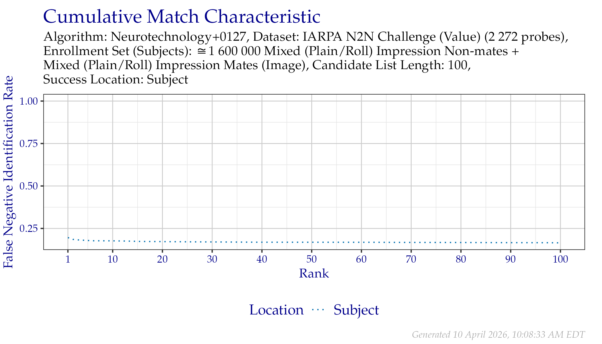
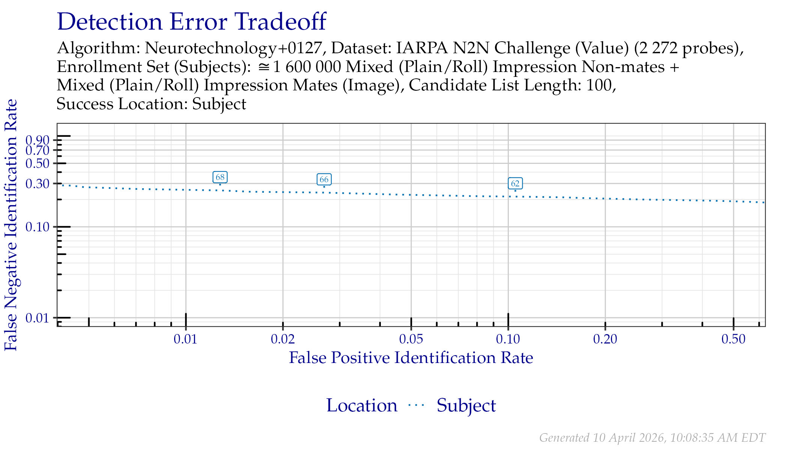

8 IARPA N2N (Sequestered)
The results in Section 8 are based on searches of the dataset IARPA N2N (Sequestered). Images in this dataset were collected during the IARPA Nail to Nail (N2N) Fingerprint Capture Challenge. The subjects whose fingerprints are the source of this data are not present in NIST Special Database 302.2
All probes searched were a single sample primarily depicting a single region from a distal phalanx. As is common, some probes may contain overlapping impressions or multiple touches. Only subject-level ground truth information is provided. All images in this dataset were analyzed by International Association for Identification (IAI) Certified Latent Print Examiners (CLPE) under guidance from NIST.
8.1 Suitable for Automated Searching
This section includes results from searches of fingermark images whose content was determined to be suitable for Automated Biometric Identification System (ABIS) searches by a CLPE3. For each image, three CLPE followed guidance from ANSI/ASB BPR 165 [1] to determine this level of utility. Images were downsampled to 1000 pixels per inch and quantized to a single grayscale color channel of 8 bits.
CLPE annotated all EFS data manually. CLPE were not provided with a mated exemplar source during probe annotation. When EFS data was provided to algorithms under test for this dataset, it could contain:
- Always:
- Region of interest
- Ridge quality map
- When ascertainable:
- Complexity
- Core locations
- Delta locations
- Examiner analysis assessment
- Minutiae locations
- Orientation
- Pattern classification
8.1.1 Failures
Table 8.1 shows the number of failures to create templates. Table 8.2 shows the number of failures to produce a candidate list.
| Image Type | Content | Failures | Attempts |
|---|---|---|---|
| Exemplar | Image | 0 | 346 |
| Probe | Image | 0 | 2 272 |
| Probe Content | Failures | Attempts |
|---|---|---|
| Image | 1 | 2 272 |
8.1.2 CMC
8.1.2.1 Plots
The CMC plots in Figure 8.1 show the FNIR of Neurotechnology+0127 when searching IARPA N2N (Sequestered) against enrollment database where a single mated identity for each search probe was present. Tabular versions of FNIR at select ranks can be viewed in Table 8.3.

Figure 8.1: CMC when searching IARPA N2N (Sequestered) probes.
8.1.3 DET
8.1.3.1 Plots
The DET plots in Figure 8.2 show the false positive and false negative identification rate tradeoffs of Neurotechnology+0127 when searching IARPA N2N (Sequestered) against enrollment database where a single mated identity for each search probe was present. Tabular versions of FNIR at select FPIR can be viewed in Table 8.4. Annotated values indicate similarity scores from the Subject line, which are tabulated in Table 8.5.

Figure 8.2: DET when searching IARPA N2N (Sequestered) probes. Annotated values indicate similarity scores from the Subject line.
8.1.3.2 FNIR at Select FPIR
The values in Table 8.4 correspond to Figure 8.2.
| Probe Content | FPIR = 0.01 | FPIR = 0.02 | FPIR = 0.1 |
|---|---|---|---|
| Image | 0.2518 | 0.2381 | 0.2152 |
8.1.3.3 Similarity Score Thresholds at Select FPIR
The values in Table 8.5 correspond to similarity score thresholds observed at the select FPIR values from Table 8.4.
| Probe Content | FPIR = 0.01 | FPIR = 0.02 | FPIR = 0.1 |
|---|---|---|---|
| Image | 68 | 66 | 62 |
References
Organizations who participated in the IARPA N2N Fingerprint Capture Challenge may have collected and retained exemplar fingerprints from these subjects with their own capture devices, but they have not received the images used in this test.↩︎
This designation is often referred to as “of value for ABIS” [1].↩︎